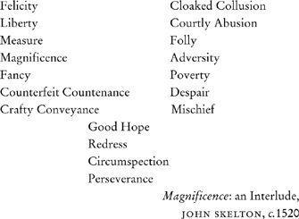

‘There are three kinds of scenes, one called the tragic, second the comic, third the satyric. Their decorations are different and unalike each other in scheme. Tragic scenes are delineated with columns, pediments, statues and other objects suited to kings; comic scenes exhibit private dwellings, with balconies and views representing rows of windows, after the manner of ordinary dwellings; satyric scenes are decorated with trees, caverns, mountains and other rustic objects delineated in landscape style.’
VITRUVIUS, De Architectura, on the theatre, c.27BC
These be the names of the players:
